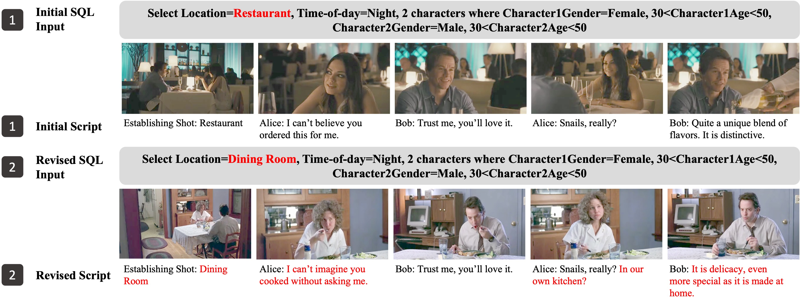

Preview
Case Studies
A screenwriter types in a script and selects their story’s fixed and variable attributes. ScriptViz retrieves sequences for the input script. The screenwriter iterates on the script based on the proposed sequences. The visualization helps to enrich the details of the existing dialogue and write the unfinished dialogue.
See variable attributes to establish settings.

A scriptwriter writes a main character "Dave", who is irritable and impulsive, trapped in a desert. She has a few sentences in her mind as shown in the top. She wants to choose an appropriate setting on time-of-day and the other character’s gender at the beginning of her creation. By setting these as variant attributes, she sees different visualizations in three rows and prefers the 3rd one. The night view she sees better reflects characters’ bad situations as they are tired for a whole day. The dead tree in the background strengthens this tension and also changes her script by adding details into it (bolded red text) at the bottom. These additions create a better main character by enhancing Dave’s personality. After seeing the visualization, it helps to add details that better reflect characters’ desperate situation.
See variable attributes to establish settings.
A scriptwriter writes a "will discussion" scene in a bedroom between Mr. Harrison: An elderly man in his late 80s, wise, with a warm and kind demeanor and James: A younger man, Mr. Harrison’s son or grandson, thoughtful and attentive. Before using ScriptViz, the scriptwriter already has some basic dialogue in his mind, as shown at the top of Figure 6. By specifying the fixed location attribute "Bedroom", and character attributes "2 male characters where Character1Age>70 and Character2Age=Variable", ScriptViz returns results in Figure 6, where the age of James is 30 in the first row, 10 in the second row, and 50 in the third row. Among all these visualizations, the scriptwriter chooses the third one as it better matches James’s thoughtful and attentive personality. Based on the third visualization of an old man talking with a younger man, their facial expressions, and the inviting atmosphere, the scriptwriter slows the pace of dialogue with longer sentences and words like "my boy" and "plenty of time". This slow pace better shows Mr.s Harrison’s personality with a warm and kind demeanor
Change fixed attributes to revise scripts.
A scriptwriter writes an argument scene between a couple Alice and Bob. Initially, she sets the scene at nighttime in a "restaurant". She wants to write Bob, who is characterized as confident and a bit presumptuous, as shown by his interaction with Alice. However, she is still not satisfied with the atmosphere of this conflict. She then realized that as Alice and Bob already know each other, it might be more appropriate to set up this conflict in a more intimate or casual setting, like home. She changes it to a nighttime "dining room". Accordingly, she changed the dialogue of the first sentence from "order food" to "cook food" as a metaphor for Bob invading Alice’s kitchen. In the third sentence, Alice directly expresses her unhappy feelings by stressing the "kitchen".
Change fixed attributes to revise scripts.
A screenwriter first creates a dialogue in a "living room" between John and Stella to establish the tense situation John faces at work. After changing the location to a moving "car", John is busier, with his attention divided between the road and the conversation, adding more tension to his situation. Accordingly, John speaks shorter in fits and starts. In the car scene, John and Stella are positioned in a linear arrangement, with John focused on driving and Stella as a passenger. This creates a sense of separation.
How it Works
ScriptViz builds atop MovieNet, a database of 1, 100 films annotated at different levels with various attributes such as movielevel genera tags, scene-level location tags, shot-level cinematic style tags, and frame-level character bounding box annotations. One key step is to preprocesses the database and increase the recogniziablity of each attributes. When in use, ScriptViz retrieves scenes according to user’s input. It is based on two types of control on visual attributes that enable writers to see exactly what they want with fixed visual elements and see variances in uncertain elements. It then retrieves images for each script’s dialogue sequences.
The way to improve the recogniziablity of each attributes during the database preprocessing. The figure left shows that we compute the CLIP visual-text similarity between setting tags and visual frames to acquire recognizability score of setting tags for each frame and we detect the front face to acquire a recognizability score for each character in each frame. The figure right shows that our pre-processing method can successfully retrieve clear frames of establishing shots and characters.
User Interface
ScriptViz interface that consists of four components. Users type in scripts (A) in AMPAS standard, add attributes control (B) component in SQL format, and click the submit button (C). ScriptViz provides visualized outputs (D) from different movie scenes, where each containing one established shot overview and images for each line of dialogue in the script.